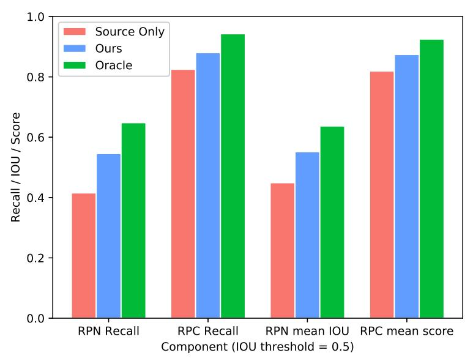
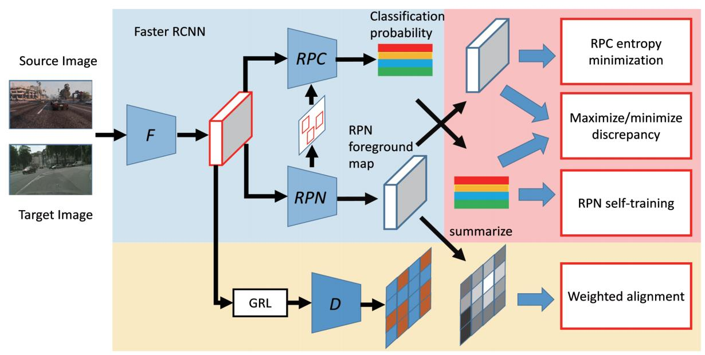
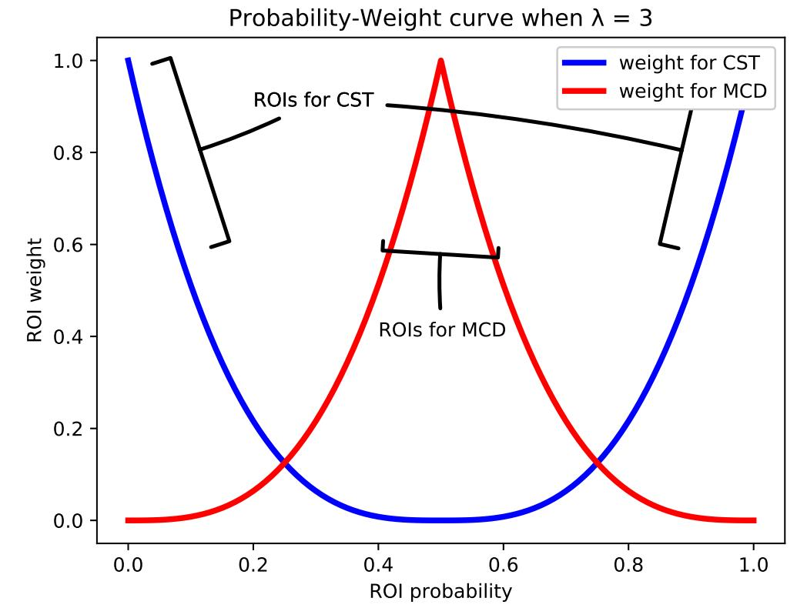
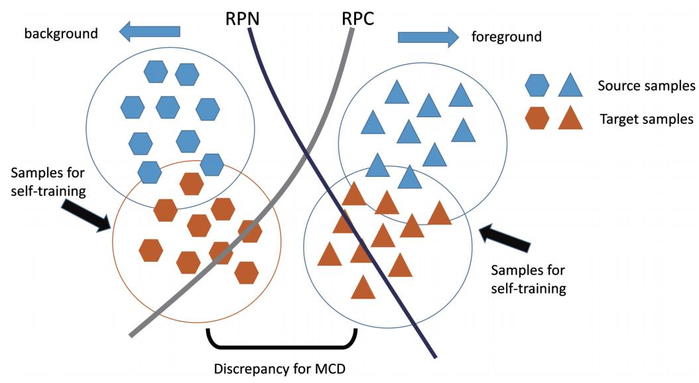
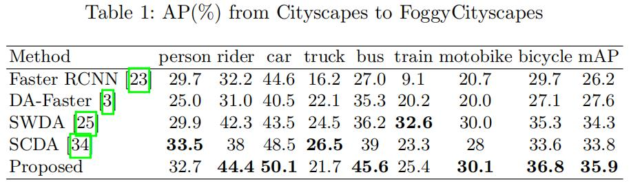

域适应：CST-MCD¶
综述¶
会议时间：European Conference on Computer Vision 2020 (ECCV 20)
论文地址：https://www.ecva.net/papers/eccv_2020/papers_ECCV/papers/123630086.pdf
源码地址：https://github.com/uitrbn/CST_DA_detection
针对领域：域适应目标检测
主要思想¶
目前大多数解决领域偏移问题的算法都是基于对抗训练策略设计的，通过设计域分类器模块，再结合对抗损失来对齐整个图像的特征表示，这种方法的有效性最早在分类任务中得到了验证，最近也被应用到了域适应目标检测任务中，如：DA Faster、Strong-Weak等等。但是不同于分类任务，大多数目标检测算法通常比较复杂，尤其是二阶段检测算法，仅仅调整主干网络的全局特征是远远不够的，需要对RPN的转移性做进一步研究。（转移性也称领域适应能力）
RPN模块的可转移性对于二阶段的检测器非常重要，而仅对主干网络得到的特征执行对齐无法使RPN模块具有有效的领域适应性。一个二阶段的目标检测器通常可以划分为三个模块：主干网络、RP N以及区域分类器(后面检测RPC)。面对较大的领域偏移，作者发现RPN和RPC展现出了不同的可转移性，RPC通常可以展示出更好地效果。作者对两个模块的适应能力做了进一步的可视化研究，具体结果如下图所示：

其中，”只有源域”表示直接将在Sim10k数据集上训练的模型应用到Cityscapes数据集上测试性能，取0.5作为IOU的阈值，分别计算RPN与RPC的召回率。很明显可以发现RPC的性能要比RPN的性能好，更重要的是，经过调整之后，oracle(绿条)和纯源域模型(红条)相比，下降的性能更少，说明RPN比RPC更容易受到域间隙的影响。然而，如果RPN不能提供质量较高的建议区域，则RPC的性能也会受到影响，因此提高RPN模块的领域适应能力对提高整个检测器的检测性能具有重要的作用。所谓RPN的领域适应能力也称为RPN模块在不同领域下发现对象目标的能力，也就是准确地将存在对象的锚点预测为前景、将不存在对象的锚点预测为背景的能力。
另一方面，在某些二阶段目标检测器中（如Faster RCNN），RPN和RPC之间没有梯度流，因此这两个模块也可以被看做是主干网络的两个分支，如果我们认为RPN是一种前景、背景分类器，那么它可以被看做是对特征图上每个锚点进行粗略和快速分类的RPC。类似的，如果我们将RPC输出的前景、背景分数相加，那么它可以被看做是一个精细并且有选择性的RPN。基于上述讨论，作者提出了一个在RPN和RPC之间使用协同训练的域适应方法，它可以很容易地推广到其他的二阶段目标检测器中。具体的来说，首先在RPN和RPC之间应用协同自训练策略(collaborative self-training)，通过利用一方置信度高的输出来训练另一方；另外，作者还引入了focal loss来对置信度高的ROI施加更多的权重，并且通过去除阈值选择来提高稳定性。第二，ROI中置信度较低的区域可以用来计算RPN和RPC之间前景、背景的预测差异，为了提高检测器的转移性，以最小化该差异为目标训练主干网络，而以最大化该差异为目标训练RPN和RPC的分类模块。
方法¶
网络结构¶
给定带有标签的源域数据和不带有标签的目标域数据，目的就是为了训练一个在目标域数据集上检测性能良好的目标检测器。传统的方法中，特征级的域适应方法尝试在两个领域数据上提取具有域不变性(domain-invariant)的特征，只针对主干网络设计相关的适应算法，忽略了其他模块的自适应，如RPN、RPC。
作者提出的网络结构如下图所示。左上角的蓝色区域表示Faster RCNN模块，其中RPN生成ROI，并且将其送到RPC中用于ROI-pooling。下侧的黄色区域表示像素级别的域判别器，用于判断输入特征来自哪个领域，以主干网络中的特征为输入，并且输出一张尺寸与输入相同的领域预测图，另外，RPN的预测将会用于突出前景锚点的域分类损失。右上角的红色区域主要由两个模块构成——协同自训练方案(collaborative self-training scheme)和RPN、RPC之间的差异最大化/最小化模块(MCD)，具有RPN(RPC)高置信度的ROI用于训练RPC(RPN)，而具有低置信度的ROI将用于差异优化。对于协同训练，ROI置信度水平越高，在计算损失函数时给予的权重就越大；而对于MCD刚好相反，ROI置信度水平越低，样本的权重就越大。

协同自训练¶
大部分三阶段检测器可以分为三个模块：主干网络F、RPN以及RPC。F主要用于提取输入图像的特征，并且输出特征图；RPN主要以特征作为输入，输出每个锚点的前/背景预测分数，并且ROI pooling模块用于提取前景概率高的锚点特征，并且进一步将其传送到RPC中；RPC模块对边界框的大小和位置执行类别预测和回归。
虽然RPC基于RPN模块的结果执行区域的分类和回归，但是它不会在训练期间将梯度反向传播到RPN中。在将结果传入RPC之前，RPN会将某些前景概率低的锚点过滤掉，如果将这个过滤操作移除，并且让RPN模块在每个锚点处执行ROI pooling操作，则RPC模块可以被等同于RPN。理想情况下，RPN模块与RPC模块应该具有一致性，换句话说，同一个锚点在RPC中如果具有较高的背景类别分数，则在RPN中对应会有较低的前景概率；同样的，如果一个锚点具有较高的非背景类别预测分数，则在RPN中对应会有较高的前景概率。
本文的动机就是充分利用RPN模块的领域自适应能力来提高模型在目标领域的目标检测性能。假设源域数据表示为\{X_s,Y_s\}，x_s\in X_s为源域的图像数据，y_s\in Y_s为对应的标签，目标域数据表示为\{X_t\}，x_t\in X_t为目标域的图像数据。对于源域图像x_s，将Faster RCNN的训练损失表示为：
另一方面，可以在RPC模块执行类似的操作，因为RPN主要关注于前景和背景的分类，并不会提供锚点类别级的伪标签，因此作者为RPC模块采用熵最小化训练策略(entropy minimization，论文链接)，并且在损失计算的过程中自适应地给高置信度样本分配较高的权重。基于熵最小化策略，RPC被训练为输出具有高置信度的类别分数s_{cls}（即不确定性最小），同时在RPN中具有较高的前景预测分数s_{rpn}，与RPN模块类似，该模块损失可以定义为：
注：在源码中，计算完f_w之后有一行切除梯度的代码指令，表明这里在计算权重时只取数值，只改变损失的大小，因此后面回传梯度的时候，梯度不会沿着权重的计算过程回传到对应的模块中，即RPN损失的回归中，梯度不会沿着权重的方向去影响RPC模块，也就是RPN模块的损失只会影响RPN模块，不会影响RPC模块，RPC模块的损失同理。
最大差异分类器¶
如上文所表述的，在训练过程中，每个ROI所计算的损失项都会乘以一个自适应的权重，RPN更新的权重值取决于RPC分支相关输出的分数，反之亦然，具体变化可见下图蓝色曲线，当ROI的分类预测概率越趋向于0.5，即分类的不确定性因素越大时，相应的损失权重越小，反之损失权重越大，通过设计权重方程来指导模型的训练主要关注置信度高的ROI区域。

除此之外，作者还引入了一个最大差异分类器(maximizing discrepancy classifier, MCD)(论文链接，论文笔记链接)，指出了带有低置信度的ROI也可以被有效地利用来提高模型的适应性。MCD最开始被用来解决图像分类中的域适应问题，通过利用特定于任务(task-specific)的分类器去对齐源域和目标域的分布。原文中首先将分类网络分成特征提取器和分类器，并且再复制一份分类器。在训练过程中，两个分类器学习最大化它们之间的预测差异，同时特征提取器试图最小化预测之间的差异（对抗训练，有点类似一般域判别器的损失，但这里直接将分类器做为判别器，没有新加领域判别器）。MCD理论指出，通过最小化和最大化二者的差异，模型的转移性(transferability)可以有效的得到提升，即有效的提升模型的领域适应能力。作者在本文中将两个阶段的分类器提取出来，用于构成MCD模块，进一步补充了协同自训练过程。
具体地来说，作者将RPN和RPC视为两个前景、背景分类器，并且以不同程度的权重对它们执行加权操作。如上图红色曲线所示，对于具有低置信度的ROI模块在MCD损失计算的过程中分配较高的权重，RPN与RPC之间的差异可以表示为：
注意：在计算MCD损失时，使用的两个分数均是未切断梯度的分数，因此这里MCD损失会通过RPN和RPC的两个预测分数来优化两个模块的参数，但在计算权重时与之前的情况一样，都切断了梯度，表明这里的权重只起到增加或减少损失的作用，损失产生的梯度并不会沿着权重的计算过程去影响RPN与RPC。
如下图所示，每个曲线表示一个特定的分类器决策边界，与分类决策面相交的数据往往是目标域中的数据，这里假设两个决策面可以正确地区分源域数据（因为源域数据有标签，因此假设具有合理性），由于目标域数据在分类的过程中具有不确定性，因此目标域数据往往与决策面相交，具体如下图橙色符号，而相交的样本容易产生错误的分类，并且差异区域之间的数据具有较大的分类不确定性（下图中Discrepancy for MCD之间的区域），因为两个分类器做出了不同的决策。随着训练的进行，对于分类器，增大两个预测差异可以使得决策面向源域靠拢，即增大差异区间的区域，而对于特征提取器，减小差异可以使得提取到的特征向源域靠拢，这种对抗损失可以达到”一退一进”的训练效果。最终，特征提取器对目标域提取到的特征会逐渐偏向源域区域，因此RPN以及RPC的输出可以被认为是可靠的伪标签。MCD具体原理可以见论文笔记链接，这里其实是域适应分类算法在域适应目标检测算法中一个很好的应用。注：MCD与利用域判别器对齐特征相比，引入了类别信息，可以更好地执行对齐。

RPN权重对齐¶
领域之间的特征对齐时领域自适应算法经常使用的基本策略，在本算法中，作者同样引入了域判别器来实现跨域特征对齐(如结构图中的黄色部分)，从而进一步稳定并且补充了之前提到的协同自训练策略。然而，由于目标检测中对象类别组合的多样性以及场景的复杂性，简单地对整张图片执行对齐会带来一定的负面影响，为此，作者设计了一种更为灵活、精细的特征对齐策略，通过利用RPN得到的分数来让域判别器主要关注于前景概率较高的区域。
具体地来说，作者设计了一种利用RPN加权的局部领域判别器，判别器D以从主干网络得到的特征图作为输入，假设特征图尺寸为H\times W\times C，输出一张尺寸为H\times W的领域预测图，并且令1表示源域，0表示目标域，图上的数值表示原特征图上对应像素点的领域预测概率。假设RPN前景预测图f尺寸为H\times W\times 9，则加权后的损失可以表示为：
损失优化¶
Faster RCNN的初始检测损失由RPN计算的定位损失L_{rpn}和RPC计算的分类损失L_{cls}构成，对于源域图像，总损失可以表示为：
域判别器的损失可以定义为：
mAP对比¶
Cityscape \rightarrow FoggyCityscape

总结¶
本文首次揭示了二阶段检测器(如Faster RCNN)中的RPN、RPC模块在面临大的领域间隙时会表现出显著不同的可转移性，基于上述观察，作者为RPN与RPC设计了协同自训练策略，让他们重点关注具有高置信度的ROI。另外，还设计了一种最大差异分类器，通过有效地利用低置信度的ROI来进一步提高检测模型的准确性和泛化能力。
注：以上内容仅是笔者的个人见解，若有错误，欢迎批评指正
最后一次修改日期：2022年2月26日